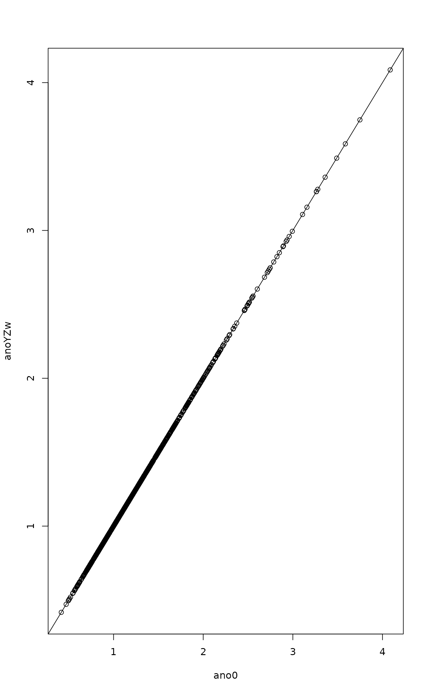

Function `getFcore` is the R prototype of getF.c as implemented in vegan release 2.6-6. This version permutes together response Y, conditions Z and weights w, but keeps constraints X non-permuted. However, X must be reweighted by shuffled w and therefore we need a new QR decomposition of X. This is only needed in weighted ordination (CCA) and in RDA we can re-use the same QR.
Details
Function `XgetFcore` implements an alternative scheme, where Y, Z & w are non-shuffled, and only X is shuffled. The shuffled X must be re-weighted by non-shuffled weights w. Because X is shuffled, we need a new QR decomposition also in unweighted analysis (RDA, dbRDA).
With same permutations, functions `anova.cca`, `permutest.cca`, `getFcore` and `getFcore` return same permutation F values.
Examples
library(tidyvegan)
data(mite, mite.env)
perm <- shuffleSet(nrow(mite), 999)
mod <- cca(mite ~ SubsDens + WatrCont + Condition(Topo + Shrub),
data=mite.env)
ano0 <- anova(mod, permutations=perm)
ano0 <- drop(permustats(ano0)$permutations)
anoYZw <- tidyvegan:::getFcore(mod, perm)
anoX <- tidyvegan:::XgetFcore(mod, perm)
plot(ano0, anoYZw); abline(0,1)

plot(ano0, anoX); abline(0,1)
## evenness of row weights
diversity(rowSums(mite), "inv") # virtual N
#> [1] 48.41282
nrow(mite) # N in unweighted model
#> [1] 70